Конструкција и израда алата за савијање.
Конструисање алата за савијање - задатак:
Конструисати алат за савијање радних предмета према слици ако је материјал: полутврди месинг  ( 400 ; 340 )
( 400 ; 340 )
Ознака за месинг је застарела ознака. Новије ознаке су:  , тј.
, тј. 
Потребно је урадити следеће:
- Одредити развијену дужину радног предмета,
- Одређујући максимални и минимални радијус савијања, проверити да ли се савијање може вршити на задани радијус радног предмета,
- Одредити силу савијања,
- Прорачунати елементе алата за савијање,
- Извршити избор стубних вођица, чауре и цилиндричног рукавца,
- Нацртати склопни цртеж алата,
- Нацртати радионичке цртеже калупа и тискача.
Развијена дужина се одређује по обрасцу:  , где су:
, где су:
 - елементарне равне дужине радног предмета,
- елементарне равне дужине радног предмета,
- елементарне савијене дужине радног предмета,
Према слици задатка, развијена дужина ће се рачунати:
Са слике се види да је:
 4
4 
10
 6
6
12
Развијене дужине:
15
20
12.2
7.76
1.5
0.44 - табела 38.
| r/s | 0.1 | 0.2 | 0.3 | 0.4 | 0.5 | 0.6 | 0.7 | 0.8 |
|---|---|---|---|---|---|---|---|---|
| ξ | 0.23 | 0.29 | 0.32 | 0.35 | 0.37 | 0.38 | 0.39 | 0.40 |
| r/s | 1.0 | 1.2 | 1.5 | 2.0 | 3.0 | 4.0 | 5.0 | 10.0 |
| ξ | 0.41 | 0.42 | 0.44 | 0.45 | 0.46 | 0.47 | 0.48 | 0.50 |
Према томе развијена дужина је: = 74.4
Минимални радијус савијања: 1.6
0.4 - коефицијент табела 39.
| Материјал | c |
|---|---|
| Č.0210 | 1.5 |
| Č.0300 | 1.8 |
| Č.0400 | 2.0 |
| Č.0145 | 0.6 |
| Č.0146 | 0.5 |
| Č.0147 | 0.5 |
| Č.0147 | 0.5 |
| Cu | 0.25 |
| Cu 60 Zn | 0.40 |
| Cu 63 Zn | 0.40 |
| Cu 12 Zn | 0.30 |
| Cu 90 Zn | 1.0 |
| Cu Sn 2 | 1.2 |
| Cu Sn 6 | 0.6 |
| Ti 35 | 0.4 |
| Ti 35 | 0.5 |
Максимални радијус савијања је: 637.5
320 - напон на граници течења материјала
102000 - модул еластичности
 < r < 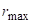 - радијус савијања радног предмета мора да се креће у границама између минималног и максималног радијуса.
< r < 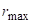 - радијус савијања радног предмета мора да се креће у границама између минималног и максималног радијуса.
У нашем случају: 1.6 < 6 ( 10 ) < 637.5 те се савијање може вршити на задани радијус.

Сила савијања се одређује на основу обрасца:
сила савијања је увећана за 30% јер се савијање врши у калупу са избацивачем.
Пошто је полупречник неутралне напонске линије: 7.746
онда је редуцирани полупречник кривине савијања: 1.936 < 5
те овај проблем спада у подручје чисто пластичног савијања.
Због чега унутрашњи момент савијања рачунамо по обрасцу:
30720
1.6 - корекциони фактор очврћавања
Ако је: 17.76 (заокружимо на вредност 18) , 6 , 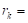 8
онда је сила савијања:  8874.67
8874.67
ако узмемо тачну вредност крака силе:
17.76
онда је
сила савијања:
8994.59
корекциони фактор очвршћавања се креће у границама: 1.6 до 1.8
ако још усвојимо да је: 1.8
онда је сила савијања:
10118.9
У коснтруисању се узима најнеповољнији случај за конструкцију , у овом случају сила са највећом вредношћу.
Ми ћемо испоштовати вредност на основу књиге (уџбеника) - извора знања , по којем радимо прорачун:
8874.67
Изједначавањем прорачунате силе са силом Земљине теже, добијамо да је за савијање двоструког угаоника по поставци задатка потребна маса:
904.655
Прорачун радијуса тискача:

5.76
 0.97 коефицијент еластичног исправљања са слике
0.97 коефицијент еластичног исправљања са слике
6
4
1.5
Прорачун радијуса калупа
радијус калупа се одређује зависно од висине радног предмета h и дебљине лима s (табела 40.)
 Табела 40. Подаци за
Табела 40. Подаци за  и 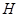.
и 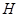.
8
Прорачун висине калупа
укупна висина калупа (за случај мањих висина радног предмета):
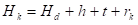= 90
 = 50 висина плоче држача (избацивача)
= 50 висина плоче држача (избацивача)
25 висина радног предмета
7 висина која се бира зависно од дебљине лима.
Прорачун зазора (зрачности)
Зазор између тискача и калупа се одређује по обрасцу: 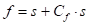= 4.28
Где је  = 0.07 коефицијент зрачности и одређује се из табеле 41.
= 0.07 коефицијент зрачности и одређује се из табеле 41.
.
Прорачун ширине тискача и калупа
по поставци задатка се види да радни предмет треба да има тачну спољашњу димензију 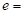 40 - онда су:
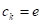= 40
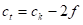= 31.44
Избор цилиндричног рукавца:
На основу силе пресе потребне за савијање датог радног предмета, из табеле 37 бира се цилиндрични рукавац (чеп) са следећим димензијама (JUS K.H2.100, JUS K.H2.101 и JUS K.H2.102):
25
34
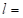 45
75
35
4
5
3
Значење појединих величина види се на слици уз табелу 37.
Стубне вођице и чауре бирају се према табели 34, односно према табели 35.
Избор стубних вођица:
Стубне вођице се раде без ојачања (табела 33) или са ојачањем (табела 34).
усвајам материјал за стубне вођице Č.1220 и одређујем пречник стуба који преноси оптерећење од силе на доњи носач алата!
420
5.80
168
3

усвајам: 30 и 165
Пошто клизна лежишта треба подмазивати, на вођицама су израђени канали ширине b за скидање нечистоће. Стубна вођица на горњем крају треба бити заобљена са радијусом r, или да има конусни завршетак, за случај ако горњи део алата у повратном ходу пресе излази изван вођица.
На доњем крају стубне вођице је израђен жлеб ширине f, који служи за учвршћивање вођице помоћу завртња.
Материјал за израду стубних вођица је угљенични челик за цементацију (Č.1120 и Č.1220) а термички се обрађују и брусе са строгим израдним толеранцијама.
Одговарајући отвори за стубне вођице у горњој и доњој плочи алата се буше на координатној бушилици да би се избегла одступања.
Стубне вођице могу да клизе директно у отворима горње плоче, која се обично прави од ливеног жељеза. Међутим у току рада долази до хабања и трошења (проширивања) отвора у горњој плочи, па се морају постављати нове стубне вођице већег пречника, пошто замена плоче не долази у обзир.
Због тог боље решење представља конструкција алата са чаурама за вођење, које се једноставно утискују у горњу плочу или се утискују и осигуравају завртњем.
Избор чаура:
У табели 35 дате су стандардне димензије и изглед чаура за вођење.
Материјал за израду чаура може бити:
- SL 14 до SL 22 за једноставније алате и мање серије,
- угљенични челик за цементацију (Č.1120 и Č.1220) за квалитетније алате,
- ливена коситерна бронза (P. CuSn 20 до CuSn 12) за алате са највећим захтевима у погледу тачности.